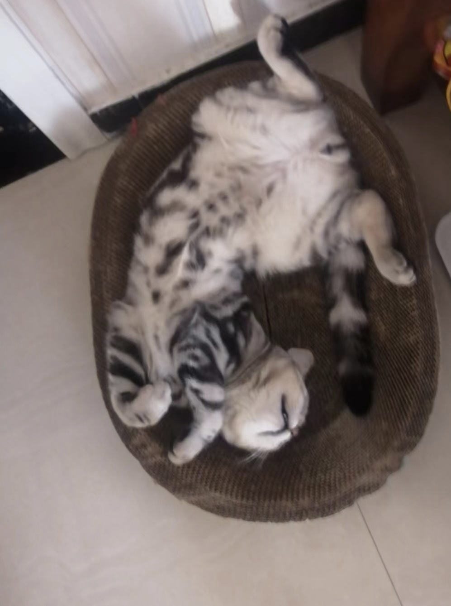
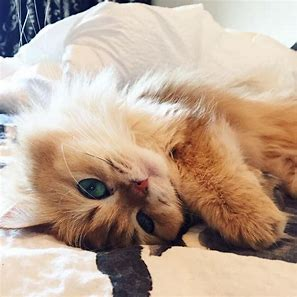

Pluto

Pluto is a five year old rescue dog of an unknown breed. He was found wandering alone and taken to the Valley Humane Society where he found his new family. From a young age, Pluto always had a special personality, he was known for being very very lazy! He spends most of his time staring out the window to keep watch of his house. Don’t let the laziness fool you because Pluto defends his family from the mailman and squirrels every single day.
Aside from his job as defender of the house, Pluto likes to have fun. Pluto’s favorite part of the day is his daily walk. Sometimes he even gets to go to the park and meet his neighbors. He also loves his toy duck, and only his toy duck. As a dog, it's in his nature to hunt and so he makes sure to get some practice with his toy duck.
Photo Gallery


Likes
- Eating his bone
- Going to the beach
- His toy duck
Brul

Brul is a 2yr old Maine coon cat. She prefers to spend his days lying in the bed. She enjoys watching outside from the window as long as there are no loud noises and bugs outside.
Brul loves walks on the beach and taking sun naps on a warm summer day. Brul is a playful cat but enjoys having slow, relaxed days at the same time. She hates grooming and bathing.
Photo Gallery


Likes
- Eating
- Sleeping
- Scratches
Hua

Huahua is a three-year-old kitten with gray and black hair. She is a very fond cat, often come to my desk to play with me when I do my homework, and often like to rub my side when I watch TV or play mobile phone. At the same time, she is also very warm, every time when guests come to our home to play, she will get along well with the guests.
Unlike other cats who is very afraid of getting out of the house, Hua Hua is very interested in exploring the outside world. Evry time when my parents are preparing for a walking at the door, she will come and continue spinning, express her wish to go out with my parents.
Photo Gallery
Likes
- Chicken Breast
- Salmon
- Beef
Fitz

Loves chasings tennis balls, chipmunks, squirrels, and birds. Often found sitting by the fire in wintertime, and in sun patches when available. He’s energetic, mischievous, and easily bored. He loves people and gets grumpy if left without a lap too long.
Loves barking up trees, running around on the lawn, and digging in the dirt looking for moles. He especially likes getting treats and whines when he comes inside and doesn’t get a snack.
Photo Gallery


Likes
- Blankets
- Being warm
- Barking
Nuonuo

Nuonuo is a cat
Nuounuo is a currious orange cat
Photo Gallery


Likes
- Cars
- Sleeping
- Eating
Rocket

Rocket (also named huihui) is a 6-month pomeranian puppy with big eyes and a small, black cute nose. Rocket is named rocket because he runs so fast and energetic all day without even having some rest. Rocket loves to carry his little toy walking around the house and jumping towards my bed.
Rocket is friendly to all human beings. He will be a little shy at first, but will ‘say hi’ to you after a few seconds. He is also friendly to dogs, especially the small breed, because the large size dogs are hard for him to smell lol. If you meet rocket, don’t hesitate to say hi to him!! He will be super happy the whole day.
Photo Gallery


Likes
- Chewing bones
- Running
- Chasing
Smoothie

Smoothie has been dubbed the "world's most photogenic cat", and her emerald eyes and golden fur have even inspired a mural in New Zealand. Smoothie also has an aptly-named brother named Milkshake, and the two are often featured together across social media platforms.
She became an internet sensation with 2.3 million followers on her smoothiethecat Instagram account.
Photo Gallery


Likes
- playing
- sunshine
- Sneaking onto the couch